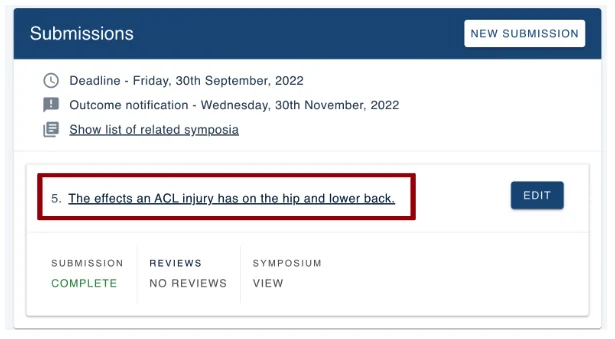
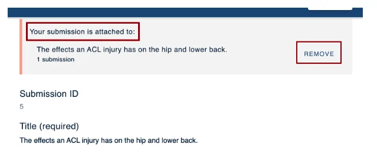
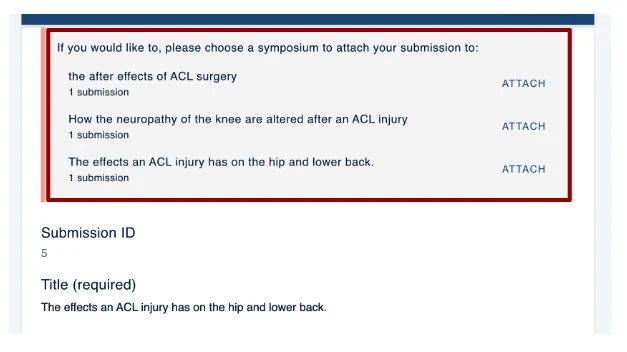
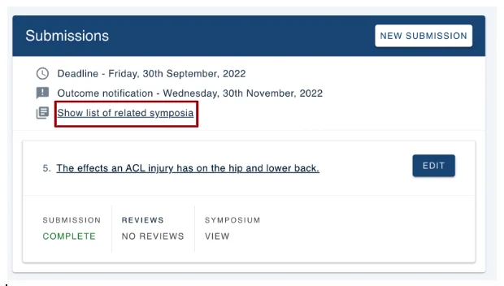
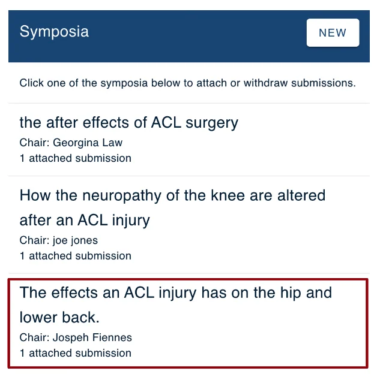
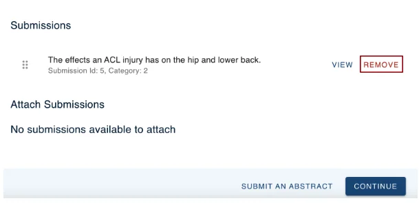

Withdrawing or removing your submission from a Symposium
For people making a submissionOrganising the event?
If settings allow, you can withdraw your submission from a symposium.#
#
There are two ways to do this.
Skip to:
First method of removing a submission from a symposium.
Second method of removing a submission from a symposium.
From your dashboard go to the submission you wish to remove from a symposium and click the title of your submission.

On the next screen, you’ll see your submission and at the top of the page, you will see what symposium your submission is attached to. From here click REMOVE on the right-hand side.

This will remove the symposium from your submission.
The page will now show all the symposiums available to you, should you need to attach your submission to a different symposium.

If you have followed the above steps and you do not need to attach your submission to another symposium then you do not need to do anything else.
You have successfully removed your submission to a symposium.
Or you can remove your submission using the following instructions.
Go to your dashboard and click on Show list of related symposia.

Next choose the symposium title your submission is attached too.

... then scroll down to the Submissions section, and click Remove.

You will then be prompted with a warning. Click OK if you would like to go ahead.

Click Continue to return to your dashboard.

Should you require any further assistance, please contact our support desk via our Contact Form.

Did this page solve it?
Thanks — this helps us fix it.